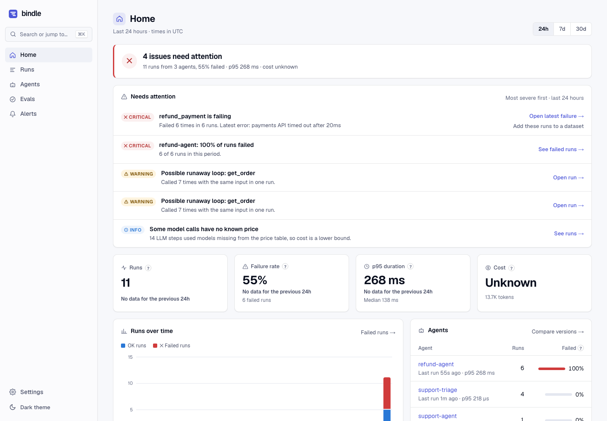
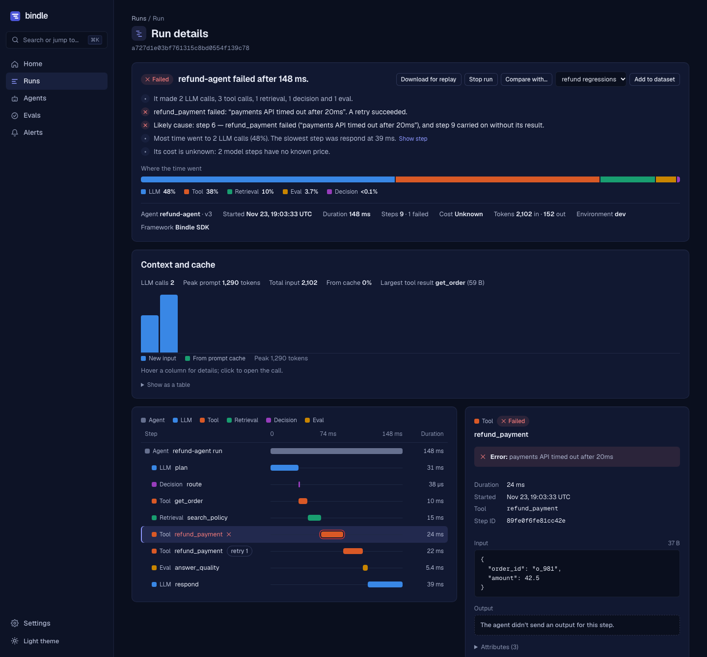
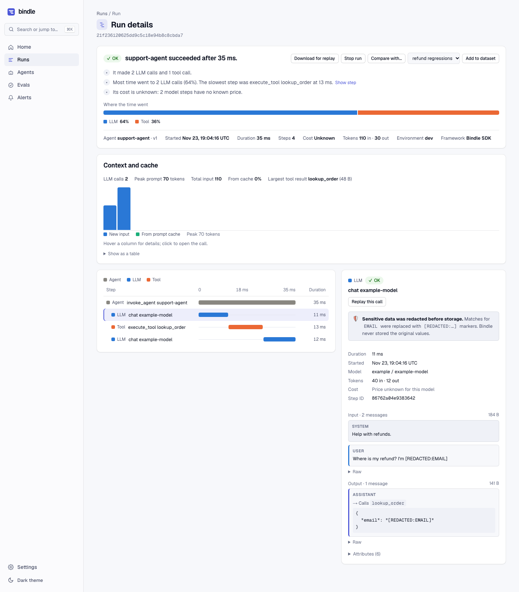

Bindle puts every LLM call, tool call, retrieval, decision and handoff in one trace — then explains failures, loops, latency and cost in plain language, so you know exactly what to open first.
pip install bindle-sdk
Auto-instruments the frameworks you already use — or anything that speaks OpenTelemetry
Answer first, data second
Every page opens with a sentence — “5 issues need attention”, “refund-agent failed after 180 ms.” — then the evidence underneath. Explanations are computed from the trace, not generated by a model, so they're fast, free and never invent facts.
The same failure appearing 40 times becomes one row with a count and the latest error. Loops, failing agents and expensive outliers join the same list, most severe first — each row opens the exact run or step.
Key numbers show the change against the previous period and the previous agent version, with direction in an arrow and text — never color alone.
“Run”, “p95”, “failure rate” and “cost” each carry a ? with a one-sentence definition. ⌘K jumps to any page, a pasted trace ID, or an agent's runs.
The console

Home answers in a sentence, then lists what needs attention, most severe first. Each item links to the exact run or step to open.

Run details opens with what the run did: LLM and tool calls, what failed and why, whether a retry worked, possible loops, where the time went, and what it cost.

Step inputs and outputs show as system, user, assistant and tool messages — with tool calls and their arguments — for every supported framework. Raw text is one click away.
Everything in one trace
Debug a run, compare versions, turn production failures into eval cases, cap runaway spend, and replay a real failure against your new code.
Names the step that started the failure — empty tool results, rejected arguments, identical failing retries, truncated answers, oversized prompts.
“The runs match for the first 4 steps, then diverge: A calls refund, B calls escalate.” Plus tool counts and step-level diffs.
Prompt size per call, prompt-cache share, the largest tool results — “a 64 KB tool result is carried in every later prompt.”
Failure rate, cost per run, p95 and steps against the previous version. Tool health across SDK, MCP and AgentCore Gateway tools.
Possible prompt injection, credentials surfacing in results, and data exfiltration — conservative signals to review, not verdicts.
A conversation’s runs in one chat view with user feedback. Full-text search over what was said, what tools returned, or the error.
Follow work across queues, human approvals, agent handoffs and MCP servers with context_token() and resume().
Contains, matches, valid JSON, tool (not) called, step and cost limits. bindle eval fails the PR when the pass rate drops.
Copy up to 50 failing runs into a dataset in one step. Bindle proposes checks that would have caught them and shows how many each fails.
Cost per successful outcome and wasted spend per agent version — “what does one good result cost?”
Pause an agent, cap steps or tokens, guard against loops, set a daily budget, or stop one run from the console.
Download a run as a cassette and re-run your agent with every tool answered from the recording. Safe to try fixes on real failures.
How it works
Your agent sends OTLP straight to Bindle — no host agent to install. Normalization, prices and redaction rules live server-side, so you never redeploy to change them.
import bindle
bindle.init(agent="support-triage", version="v12")
@bindle.trace_tool
def lookup_customer(email: str) -> dict: ...
with bindle.step("plan", type="decision"):
bindle.decision("route", options=["crm", "kb", "human"],
chosen="crm", rationale="needs account data")
bindle.outcome("ticket_resolved")Installed frameworks are detected and instrumented automatically.
import * as bindle from '@bindle-ai/sdk';
bindle.init({ agent: 'support-triage', version: 'v12' });
const lookupCustomer = bindle.traceTool(
async function lookupCustomer(email: string) {
return crm.find(email);
});
await bindle.withSession(conversationId, () =>
bindle.step('plan', { type: 'agent' }, async () => {
await lookupCustomer(email);
}));Same behaviour as Python: redaction on, never throws into or blocks your agent.
$ bindle init # detect framework, save key, send a test trace $ bindle check # verify key and endpoint (sends nothing) # Let your coding agent set it up over MCP $ claude mcp add bindle -- bindle mcp
bindle init writes .env readable only by you and never prints the full key.
for step in plan:
bindle.check_limits() # raises if paused, over budget,
# over step/token caps or looping
run(step)Enforced only where your agent calls check_limits() — never anywhere else.
Security and privacy by default
Redaction runs twice and is on by default — secrets are dropped, not masked. Bindle never holds your model keys, and the console sets a ceiling your code can only make stricter.
Run it anywhere
OpenSearch, PostgreSQL, ingest, API and alerts on your laptop — with demo runs, including a runaway loop. Needs Docker, Go 1.25+, Node 20+ and Python 3.9+.
make up # local stack make console # http://localhost:3000 make demo # send demo runs
Ingest, a private API, the console behind HTTPS with Cognito sign-in, and the data stores — all on ARM (Graviton) Fargate, with Kinesis buffering ingest. Deploying creates paid AWS resources.
cd deploy/aws cdk deploy
FAQ
Yes. Bindle is licensed under the Apache License 2.0 — the Go backend, Next.js console, Python and TypeScript SDKs and the AWS CDK stack are all in the repository.
It is designed not to. The SDK exports asynchronously with a bounded queue, swallows its own errors and is a no-op without an API key, so the init line is safe to commit. Ingest answers 429 or 503 with Retry-After so exporters back off.
No. Summaries are computed deterministically from the trace — counts, failures, retries, repeated tools and leaf-step time — so they are fast, free and never invent facts.
No. Model-graded evals run in your own environment and report back with bindle.score(). Replay uses a provider key you paste for that one request; it is never stored.
Redaction runs twice — in the SDK and at ingest — and is on by default. Secrets are dropped, not masked. You can turn off prompt and output capture entirely, and console settings act as a ceiling your code can only make stricter.
LangGraph, Strands, Google ADK, Microsoft Agent Framework and Amazon Bedrock AgentCore are auto-instrumented, plus custom code via decorators. Anything that emits OpenTelemetry works through the standard tracer provider.
From published list prices in backend/pricing.json, or from the prices your workspace actually pays (discounts, batch, Bedrock, Vertex, Azure, self-hosted). Cost is computed when a step arrives, so price changes never rewrite history. Unknown prices are shown as unknown — never estimated.
Locally with Docker Compose (make up), or in your own AWS account with the included CDK stack on Graviton Fargate behind Cognito sign-in. Deploying to AWS creates paid resources.
import bindle
bindle.init(agent="support-triage") # no-op without BINDLE_API_KEY